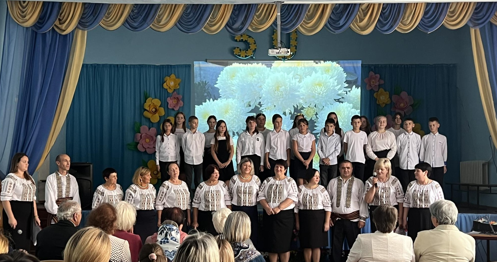
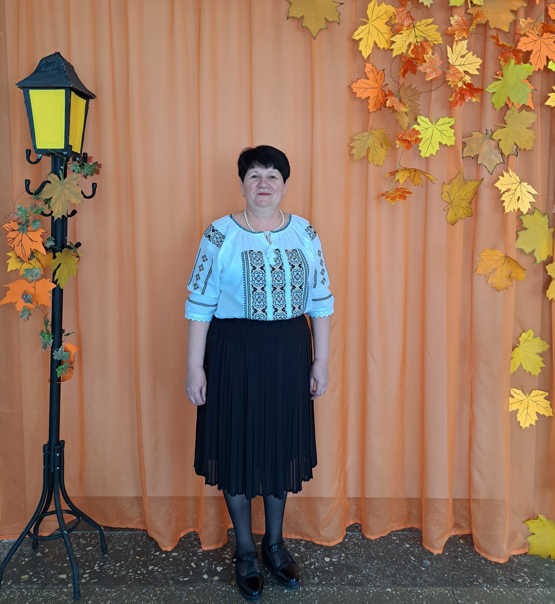
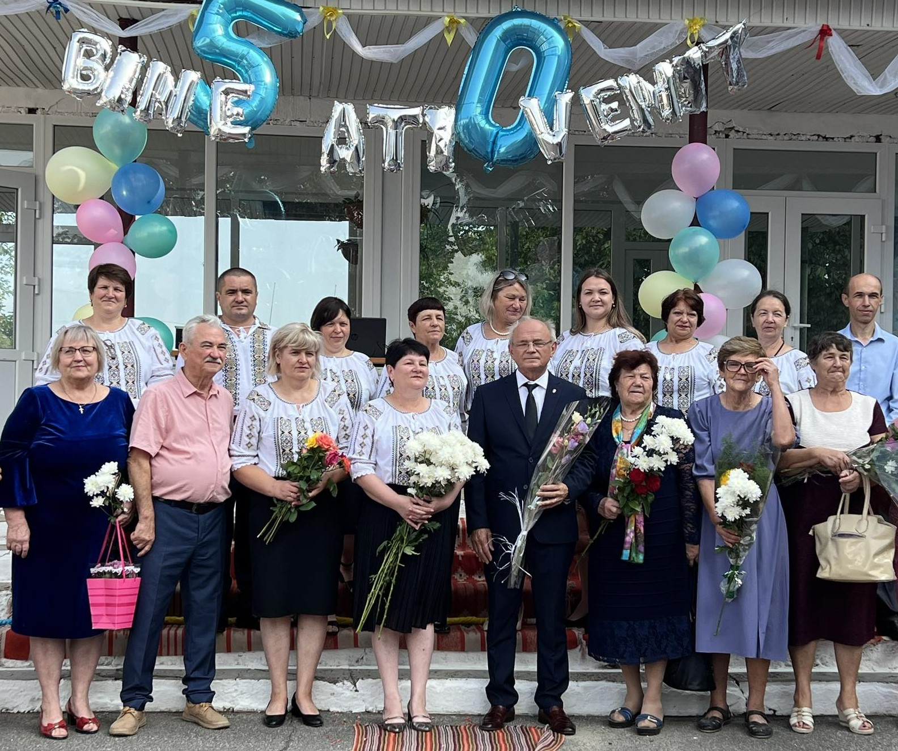

Aurelia Tihon
|
Profesor
Româna,rusa,franceza aurelia.tihon@gmail.com +37324230439 |
Profesor de chimie.Bun organizator,spirit competitiv,lucru în echipă,simț al responsabilității față de ceea ce fac. Am abilități de utilizare a procesoarelor de texte și a altor aplicații,a bazelor de date,a Internetului. Promovez utilizarea resurselor partajate și instrumentelor de distribuire în mediul academic. Implic elevii în crearea resurselor digitale. Promovez prevederile legislației în domeniul protecției copiilor în mediul digital,educației digitale. |
|  |  |  |

|
Experienta de lucru
Director
Iunie 2011-PrezentIP Gimnaziul Grigore Vieru din com.Purcari
Profesor de chimie/biologie
Septembrie 1999 - PrezentIP Gimnaziul Grigore Vieru din com.Purcari
Profesor de chimie/biologie
Septembrie 1993 - 1999Gimnaziul Viisoara
Educatie
Student la facultatea biochimie
Septembrie 1987-1992UPS Tiraspol
Eleva
Septembrie 1976 - 1986Scoala medie din com.Purcari